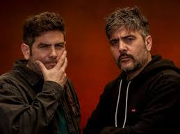
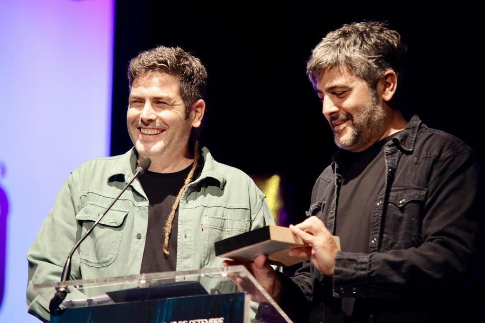

Estopa es un dúo español formado por los hermanos David y
Jose Manuel Muñoz con origen en la ciudad catalana de Cornellá de
Llobregat en el año 1999. Precursores y embajadores de un estilo denominado
como rumba catalana mezclada con rock y pop, el grupo se caracteriza por unas
letras basadas en la cotidianeidad que han enganchado a millones de fans.
David y Jose se criaron en Cornellá y pasaban mucho tiempo en el bar que sus padres regentaban frente a la comisaría de policía escuchando música de Los Chichos o Los Chunguitos, entre otros, y tocando la guitarra. Nunca fueron buenos estudiantes, de hecho abandonaron el instituto para trabajar en una fábrica de coches. Y es de ese trabajo del que surgió su nombre artístico, de la orden del jefe de la fábrica ‘Dale estopa! para que la producción no parase.
Durante su carrera discográfica han recibido numerosos premios, como son entre otros:
La proxima gira que realizara estopa sera por su 25 aniversario que se realizara en el 2024 . La gira fue anunciada por el grupo el 13 de diciembre de 2023 y se desarrollará de abril a octubre de 2024.
Inicialmente, constará de 24 conciertos, iniciándose en Venezuela y recorriendo varias ciudades de América Latina para después actuar en varias ciudades de España
Aqui tenemos un video grabado desde uno de los muchos conciertos de Estopa.